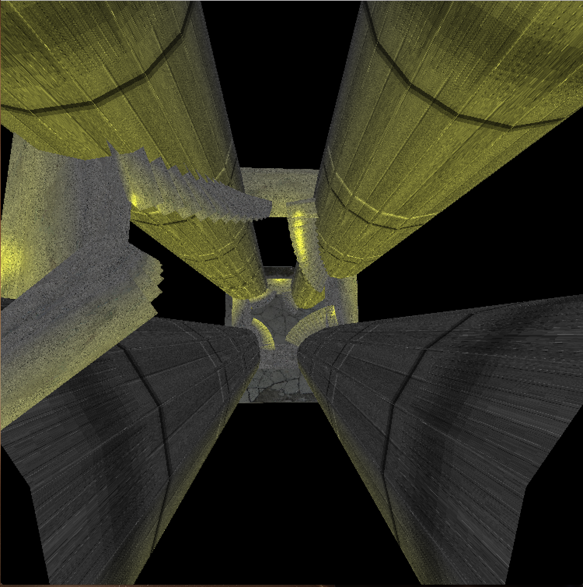

Fluid Simulation
Working on a fluid simulation, learning from online fluid mechanics and from Robert Bridson's articles. hereBasic Ray Tracer
Ray tracer modeled after Turner Whitted's 1980 paper. Displays the basics of global illumination and ray tracing. Topics: Primary rays, shadows, reflection, transmisson and procedural texture. The live shader code read more about the process for the creation hereLighthouse Ray Tracer
This was my first attempt at a ray tracer. I wanted to create a lighthouse in the oceean. The water is a height mapped function using perlin noise to mimic trichoidal waves. The objects in the scene are distance functions which are solved through ray marching the scene then the lighthouse spot light is a distance marched cone which is layered after the scene is drawn and mixed into the scene. The live shader code
